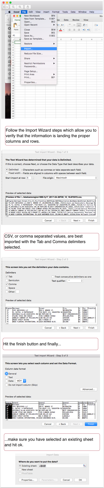

# Before we get started
#### A full primer on Excel is below. I'm going to try my best not to bore you to death by sticking to it too closely, but I wanted you to at least have it.
#### <a style="color:blue;" href="https://docs.google.com/spreadsheets/d/1fiRxIvWd43ks8clU_-8JRSACaeHU9lJ9LaKRs3yFZPU/edit?usp=sharing" >Here's a sample data sheet I'll be using today. Please download or copy into Excel.</a>
<br>
<br>
# A Basic Excel Primer - Tour of the Interface
## Workbooks and worksheets
A Microsoft Excel Workbook is a file that holds and organizes worksheets (or what most people commonly refer to as spreadsheets). A workbook can hold multiple worksheets of related data. You can rename a worksheet by right-clicking on it ([instructions](https://support.office.com/en-us/article/Rename-a-worksheet-3F1F7148-EE83-404D-8EF0-9FF99FBAD1F9?ui=en-US&rs=en-US&ad=US&fromAR=1)).
![][1]
[1]: images/a-basic-excel-primer-the-interface/workbooks-and-worksheets.png
### Columns, rows and cells
The prevasive currency of the worksheet.
![][2]
[2]: images/a-basic-excel-primer-the-interface/columns--rows-and-cells.png
### The ribbon (or menu tabs)
The Ribbon holds multiple tabs, with each tab containing related functionality. For example, the Home tab contains quick access to fonts, styling, etc.
![][3]
[3]: images/a-basic-excel-primer-the-interface/the-ribbon--or-menu-tabs-.png
### Insert menu, etc.
The Insert tab allows you to add tables, pictures, shapes, etc.
![][4]
[4]: images/a-basic-excel-primer-the-interface/insert-menu--etc.png
### The File tab
The File tab is an icon that gives you the options to start and save your work.
![][5]
[5]: images/a-basic-excel-primer-the-interface/the-file-tab-.png
### The File tab opens into a different window
The file tab gives you several options to start with templates or opening and saving files.
![][6]
[6]: images/a-basic-excel-primer-the-interface/the-file-tab-opens-into-a-different-window.png
# Importing data
Although you can double click on a CSV file and hope it opens properly in Excel, I prefer to import it to avoid conflicts and errors.
## Step 1. After creating a new workbook, click on File --> Import
A dialog box opens, asking you the file type. Select CSV, navigate to the file on your computer and import it.

## Step 2. Patience
Depending on the size of the CSV file, it can take anywhere from seconds to several dozen minutes for the data to appear in the worksheet.
# Arithmetic Functions
1. Max - a simple function to find the maximum value.
In column AI, type Maximum value
In column AJ, type =MAX(N:N)
In english:
= denotes the start of a function
MAX is the name of the function that finds the maximum value in a column or row
(N:N) The parenthesis hold the cells you want to include in your calculations. "N:N" means the entire N colum that has numbers in it.
## Hit enter
![][1]
[1]: images/4-arithmetic-functions/hit-enter.png
## Add forumlas
In this data set, we want to find the total number of cases per year for the illnesses combined.
![][2]
[2]: images/4-arithmetic-functions/add-forumlas.png
## Step 1.
In cell D1, "Total".
We could add the following formula in cell d2 =300+12 to get a total of 312. We'd have to repeat with the numbers in each cell.
That is laborious and doesn't take advantage of Excel's functionality.
Instead, we will write a formula that taps cell locations where the numbers are.
So we will write in cell d2, =B2+C2 to see the total.
![][3]
[3]: images/4-arithmetic-functions/step-1-.png
## Propagate the formula
For the totals for the other years, you do NOT want to type =B3+C3 and then =B4+C4, etc.
Instead look at bottom right corner of the D2, and you'll see a little box.
Hover over that box and your white cross turns into a black cross. Double-click when you have the black cross and the formula propagates through out the relevant columns.
![][4]
[4]: images/4-arithmetic-functions/propagate-the-formula.png
# Sorting
**Sorting** sequences your data by a particular order, such as by date, name, category, or by number.
**Filtering** narrows the data you can see to only the categories, dates, names, etc. that you choose. (see the [filtering tutorial](https://github.com/sandeepmj/philly/blob/master/6-filtering.md))
## Let's start with sorting
![][1]
[1]: images/5-sorting/let-s-start-with-sorting.png
## Add levels of sorting
You can add other levels of sorting by clicking on the **+** sign.
If you want to delete a sort, just hit **-**.
![][2]
[2]: images/5-sorting/add-levels-of-sorting.png
## Undo sorting
In the home menu, click on the undo button till you have undone your sorting:
![][3]
[3]: images/5-sorting/undo-sorting.png
# Filtering
**Filtering** narrows the data you can see to only the categories, dates, names, etc. that you choose.
**Sorting** sequences your data by a particular order, such as by date, name, category, or by number. You can [follow the tutorial here](https://github.com/sandeepmj/philly/blob/master/5-sorting.md).
## Step 1. You can find the Filter button in the Home Tab
![][1]
[1]: images/6-filtering/step-1-you-can-find-the-filter-button-in-the-home-tab-.png
## Step 2. Click on the filter button and note that a little filter icon appears in each column:
![][2]
[2]: images/6-filtering/step-2-click-on-the-filter-button-and-note-that-a-little-filter-icon-appears-in-each-column-.png
## Step 3. Select which category you want to filter. Let's try column I
Note that all the entries in the column I are in the filter.
![][3]
[3]: images/6-filtering/step-3-select-which-category-you-want-to-filter-let-s-try-column-i.png
## Step 4. Turn off "Select All" and then check only the items you want to see.
![][4]
[4]: images/6-filtering/step-4-turn-off--select-all--and-then-check-only-the-items-you-want-to-see-.png
## Filtering amounts and numbers
Let's say we want to filter the loan amounts so we see only loans between $10,000 and $75,000.
## Press the filter button and click on filter icon on column N (Gross Approval amout):
![][5]
[5]: images/6-filtering/press-the-filter-button-and-click-on-filter-icon-on-column-n--gross-approval-amout--.png
# Further Reading
### <a style="color:blue;" href="https://mjwebster.github.io/DataJ/tipsheets/ExcelMagic.pdf" >Mary Jo Webster's Excel Magic Tipsheet was my bible for a while</a>